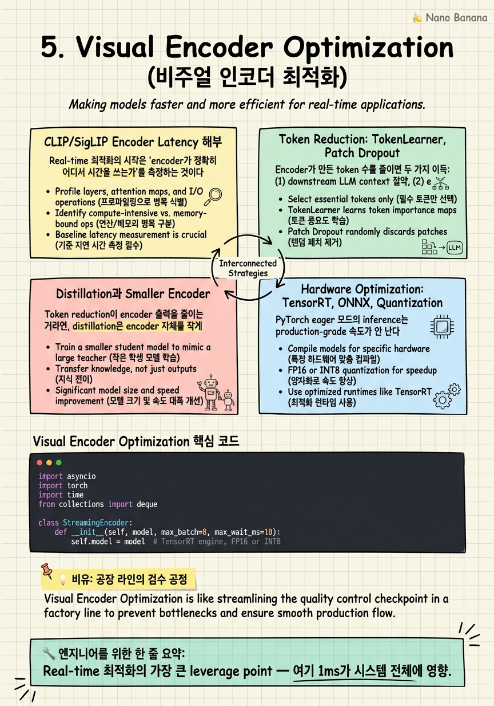

Visual Encoder Optimization

🎯 학습 목표
- CLIP ViT-L vs SigLIP, vs TinyCLIP의 latency/quality trade-off를 비교할 수 있다
- TokenLearner, patch dropout 같은 token reduction 기법의 동작 원리를 설명할 수 있다
- TensorRT INT8 quantization이 ViT encoder에 미치는 latency 이득과 quality 손실을 예측할 수 있다
- Micro-batch vs streaming-batch의 latency vs throughput trade-off를 정량적으로 분석할 수 있다
- 'stronger encoder vs higher FPS' 결정에서 시나리오별 권장 선택을 제시할 수 있다
지금까지 input pipeline, sampling, sliding context를 봤다. 모두 'budget 안에 어떻게 처리할까'의 다른 면이었다. 이 챕터에서 보는 vision encoder는 budget을 가장 많이 소비하는 단일 hotspot이다. CLIP ViT-L/14 한 frame이 A100에서 ~10ms, 30 FPS면 300ms/sec — 부하의 일부지만 동시 5개 stream이면 GPU 한 장이 포화된다. Encoder 최적화 = real-time scalability의 leverage point.
기존 video LLM에서는 encoder를 '주어진 것'으로 보고 최선의 frame을 골랐다. Hour-scale에서는 encoder를 한 번 돌려 memory에 저장했다. Real-time에서는 encoder가 매 frame 매번 돈다. Encoder가 100ms 걸리면 latency budget이 거의 끝난다. 그래서 encoder를 어떻게 빠르게, 그리고 GPU 자원을 효율적으로 쓰면서 돌릴지가 real-time의 핵심 시스템 결정이 된다.
Mental model shift: General에서는 'good encoder를 선택'. Hour-scale에서는 'offline batch로 한 번 돌림'. Real-time에서는 'encoder가 budget의 % 단위로 평가되는 component'다. 1ms 줄이는 게 의미 있고, INT8로 quality 1% 손실해도 latency 30% 줄이면 win인 경우가 많다.
이 챕터에서는 encoder의 latency를 layer-by-layer로 해부하고, token reduction, distillation, quantization, batching이라는 4 가지 최적화 축을 다룬다. 그리고 '강한 encoder + 낮은 FPS vs 가벼운 encoder + 높은 FPS'라는 결정적 trade-off에 대한 시나리오별 답을 본다.
핵심 내용
CLIP/SigLIP Encoder Latency 해부
Real-time 최적화의 시작은 'encoder가 정확히 어디서 시간을 쓰는가'를 측정하는 것이다.
CLIP ViT-L/14 (224×224 input, 16×16 patch grid = 256 patch): A100에서 단일 frame ~8ms (FP16). 내부 breakdown: patch embedding ~0.5ms, transformer 24 layers × ~0.3ms = 7.2ms, projection head 0.3ms. 24 layer attention이 95% 비중.
SigLIP (Sigmoid loss CLIP, Zhai et al., ICCV 2023): 아키텍처는 CLIP과 거의 동일하지만 loss 함수가 다름. Latency 동일. Quality는 zero-shot benchmark에서 CLIP 대비 3-5% 향상. Real-time에서 같은 budget에 quality up — 기본 선택.
SigLIP-2 (2024): patch grid를 224→384로 키운 variant도 있음. Quality 더 좋지만 latency ~2배. Real-time에서는 224가 default.
TinyCLIP (Wu et al., ICCV 2023): CLIP을 distillation으로 압축. ViT-Tiny/40M params 버전이 ~2ms (A100 FP16). Quality는 zero-shot ImageNet top-1 기준 ~10% drop (75% → 65%). 'quality - 10% / latency / 4' 같은 trade-off.
LLaVA-NeXT의 patch grouping: 224 input에 224 native + 4 sub-grid (448 input divided into 2x2). Frame당 token이 5x로 증가하지만 quality 큰 향상. Real-time에는 부적합 — token budget이 폭발.
Profiling의 함의: encoder 자체 forward만이 아니라 전후 단계 (CPU → GPU upload, 출력 token reshape)도 측정. 224×224 RGB 한 frame = 150KB, PCIe 16x로 ~10μs지만 batching 안 하고 single frame씩 보내면 launch overhead가 ms 단위로 누적된다. single frame inference vs batched의 throughput 차이가 5-10배.
시니어 시그널: 'CLIP encoder latency를 어떻게 측정할 것인가?'에 대해 forward만이 아니라 upload/download/launch overhead까지 답하는가.
Token Reduction: TokenLearner, Patch Dropout
Encoder가 만든 token 수를 줄이면 두 가지 이득: (1) downstream LLM context 절약, (2) encoder 자체의 attention 비용 감소 (token^2 비례).
TokenLearner (Ryoo et al., NeurIPS 2021): N개 token을 K개 (K << N) 'learned token'으로 압축. Spatial attention map을 학습 — 'frame의 어느 영역이 token K_i에 contribute'하는지. 256 → 8 token까지 줄일 수 있고, 일반 video classification에서 quality 손실 minimal.
Real-time 적용: 이미 학습된 video LLM에 retrofit하기는 어렵다. From-scratch 또는 fine-tuning이 필요. 하지만 8 token/frame이면 sliding window가 32배 더 길어진다 — trade-off worth it.
Patch Dropout (Akbari et al., 2021; Liu et al., 2023): 학습 시 patch의 50-70%를 random drop. Inference 시 dropout 비율을 조정해 latency-quality trade-off. MAE의 학습 trick을 inference에 끌어온 것.
장점: zero overhead — 그냥 patch를 안 보내면 됨. 단점: random drop이 informative patch를 떨굴 위험. 해결: importance-based selection — saliency 또는 cls token attention을 기준으로 top-K patch만 유지.
Q-Former resampler (BLIP-2): encoder 출력 N token을 cross-attention으로 K learned query에 압축. 사실상 TokenLearner의 한 형태. LLaVA, MiniGPT-4 같은 video LLM의 표준. K=32가 일반적.
Pixel Shuffle / Spatial pooling: 단순히 spatial dimension에서 2x2 → 1로 묶음. 256 token → 64 token. Quality 영향이 의외로 작음 (sub-patch detail이 video QA에서 critical하지 않음). 가장 단순하고 효과적인 baseline.
Real-time blueprint: Q-Former 32 token + adaptive spatial pooling (low-motion 구간은 더 aggressive pool). 한 frame을 16-32 token으로 압축 — sliding window가 5초가 아닌 30초까지 cover.
Distillation과 Smaller Encoder
Token reduction이 encoder 출력을 줄이는 거라면, distillation은 encoder 자체를 작게 만드는 것.
TinyCLIP: CLIP을 teacher로 두고 더 작은 ViT를 student로 학습. Multi-stage pruning. 결과: ViT-L (300M params, ~8ms) → ViT-Tiny (40M, ~2ms). Quality 손실은 10% 정도지만 video understanding의 downstream task에서는 더 작은 손실 (텍스트와 매칭만 잘하면 OK).
MobileCLIP (Apple, 2024): 모바일 inference 최적화 CLIP. ViT 대신 hybrid CNN+Transformer. iPhone에서 ~3ms. Server-side에서도 batched throughput 매우 높음. on-device real-time video LLM의 기본 encoder 후보.
SigLIP-Tiny: SigLIP의 small variant. Encoder 자체보다는 학습 data의 효율로 강점.
Custom distillation: 자체 도메인에 맞게 CLIP을 distill. 일반 ImageNet zero-shot 성능을 buy하지 않고 domain-specific quality를 keep. 예: surveillance에서 'person/vehicle/bag' detection만 잘하면 됨 — 5x 작은 encoder로 충분.
Distillation의 trade-off: teacher가 가진 'general capability'를 잃을 위험. 일반 video QA에는 약함. 도메인 좁힐수록 distillation의 이득이 큼.
일반 video LLM에서의 패턴: 'CLIP for general + domain-tuned head' 조합. CLIP은 frozen, downstream head만 학습. Real-time에서는 이 패턴이 너무 비싸다. End-to-end smaller model이 답에 가깝다.
주목할 trend: vision encoder를 task-conditional로 만드는 작업. Query/instruction을 받아 encoder가 그에 맞게 token을 만들어냄. 같은 frame이라도 'find a person'과 'count cars'에서 다른 token 분포. 학계 초기 단계지만 real-time과 잘 맞는다 — 매 frame을 'general purpose'로 encoding할 필요 없음.
Hardware Optimization: TensorRT, ONNX, Quantization
PyTorch eager 모드의 inference는 production-grade 속도가 안 난다. Hardware-specific 최적화가 필수.
TensorRT: NVIDIA GPU 전용. PyTorch model → ONNX → TensorRT engine 변환. Kernel fusion, memory planning, precision optimization. ViT-L/14 기준 PyTorch FP16 8ms → TensorRT FP16 4ms (50% 감소). TensorRT의 가장 큰 win은 launch overhead 제거 — small batch에서 큰 차이.
ONNX Runtime: cross-platform (CPU, GPU, mobile NPU). TensorRT만큼 빠르지는 않지만 portability가 강점. Edge device에서 표준.
Quantization: weight/activation을 lower precision으로. ViT에서는: - FP32 → FP16: 거의 손실 없이 ~2x speedup. 기본.
- FP16 → INT8: 추가 ~2x speedup, quality 1-2% 손실. Production worth it.
- INT8 → FP8 (H100): 더 빠르고 INT8보다 quality 좋음. H100/H200 GPU에서 가능.
- INT4: 5-10% quality 손실. ViT에서는 아직 risky.
Post-training quantization (PTQ): 학습된 모델을 calibration data만으로 quantize. 빠르고 간단. CLIP에 대해 INT8 PTQ는 zero-shot ImageNet ~1% 손실로 잘 작동.
Quantization-aware training (QAT): 학습 중 quantization을 simulate. 더 적은 quality 손실. CLIP을 처음부터 QAT로 학습한 variant가 INT8에서 손실 0.5%.
Flash Attention (Dao et al., 2022): attention 자체의 memory access 패턴 최적화. ViT-L에서 ~30% latency 감소. PyTorch 2.x에서 F.scaled_dot_product_attention이 자동 사용.
Production stack: PyTorch (학습) → ONNX export → TensorRT INT8 (calibration 후) → FlashAttention 활성화. ViT-L/14 한 frame 8ms → 2ms로 4배. Real-time의 leverage가 가장 큰 부분.
주의: quantization은 quality 손실이 dataset-dependent. Calibration data가 production traffic을 대표하지 않으면 'lab에선 잘 되는데 production에선 망함' 패턴이 발생. Calibration data 선택이 quantization 성공의 핵심.
Batching: Micro-batch vs Streaming-batch
Encoder는 batch에 매우 민감하다. Batch=1과 batch=8의 throughput 차이는 5-10배. 그런데 real-time에서는 batch를 모으는 자체가 latency를 야기한다. 이 tension의 해결이 batching 전략의 핵심.
Single-frame inference: batch=1로 매 frame 즉시 process. 단순. Latency 최소 (queue 대기 없음). Throughput 낮음 (GPU 자원 활용도 ~20%).
Static batching: 일정 시간 (예: 50ms) frame을 모은 다음 한 번에. Latency 추가 50ms — conversational 시나리오엔 가능, monitoring엔 부담.
Micro-batching: 매우 짧은 시간 (5-10ms) 동안만 모음. Latency 추가 작고 throughput 회복. Hybrid 패턴.
Streaming batch (cross-stream batching): 여러 video stream에서 들어온 frame을 함께 batch. 같은 시점의 frame이 여러 stream에서 들어오면 자연스럽게 batch가 형성됨. 이게 multi-tenant real-time의 핵심.
Example: CCTV 50대로부터 30 FPS씩 들어옴. 50 frames every 33ms. 이걸 batch=50으로 한 번에 처리하면 GPU 1대로 모두 cover. 각 stream의 latency는 33ms + encoder time. Multi-tenant는 batching의 천국.
Continuous batching (vLLM pattern): batch가 동적으로 변함 — 한 stream의 frame이 끝나면 즉시 새 stream의 frame으로 swap. 이건 LLM serving 측에서 더 잘 알려져 있지만 (다음 챕터들의 주제) encoder에도 동일 패턴이 가능.
Padding의 함정: ViT는 fixed input size를 요구. 다른 stream의 frame이 다른 resolution이면 padding 필요. Padding 비율이 30% 넘으면 batching 이득이 무력화. 모든 stream을 같은 resolution으로 normalize하는 게 production blueprint.
Async kernel launch: CUDA stream을 여러 개 띄워 encoder forward와 downstream LLM forward를 overlap. CPU-GPU communication도 overlap. 이건 PyTorch에서 torch.cuda.Stream API. 잘 짜면 effective latency를 추가 20-30% 단축.
시니어 시그널: 'batch size를 어떻게 정할 것인가?'에 대해 'throughput 곡선의 knee point를 측정해서, latency budget이 허락하는 최대 batch'를 답할 수 있는가. 정량 측정 기반 결정이 중요.
💡 비유로 이해하기
Vision encoder는 공장 조립 라인의 검수 공정과 같다. 부품이 컨베이어로 흘러 들어오면 검수원이 들어 살펴보고 OK/NG 판단을 한다. 다음 공정(LLM)은 검수원의 판단을 기다린다.
검수원이 한 부품에 1분씩 쓰면 라인 전체가 느려진다. 그래서 공장은 여러 최적화를 한다.
Token reduction = 부품의 일부만 보고 판단. 부품 전체를 들춰보지 말고 핵심 5군데만 확인. 빠르고 quality도 비슷.
Distillation = 검수원 교체. 베테랑 검수원 (CLIP-L)을 신입 (TinyCLIP)으로 교체. 정확도는 약간 떨어지지만 속도는 4배. 도메인이 정해져 있다면 신입도 충분.
Quantization = 검수 도구 단순화. 정밀한 마이크로미터 (FP32) 대신 빠른 디지털 캘리퍼 (INT8). 0.1mm 단위까지는 안 봐도 된다면 win.
Batching = 한 번에 여러 부품을 들고 검사. 한 박스 (batch=8) 들고 검사하면 시간당 처리량 5-10배. 단, 박스가 차기를 기다리면 첫 부품의 wait 시간이 늘어남.
결정적 통찰: 검수 공정이 라인 전체의 속도를 결정하므로, 여기에 1초 줄이면 전체 throughput이 비례 증가한다. Encoder도 마찬가지 — latency budget의 30-60% 차지하는 hotspot이라 leverage가 가장 크다. 다른 단계 5% 줄이는 것보다 encoder 30% 줄이는 게 훨씬 의미 있다.
💻 코드 예시
Real-time encoder serving의 기본 패턴 — micro-batching으로 throughput을 회복하면서 latency 추가는 budget 안에 묶는다. TensorRT-style optimized engine을 가정.
import asyncio
import torch
import time
from collections import deque
class StreamingEncoder:
def __init__(self, model, max_batch=8, max_wait_ms=10):
self.model = model # TensorRT engine, FP16 or INT8
self.max_batch = max_batch
self.max_wait = max_wait_ms / 1000.0
self.queue = deque() # (frame_tensor, future, deadline)
self.running = True
async def encode(self, frame_tensor, latency_budget_ms=100):
loop = asyncio.get_event_loop()
fut = loop.create_future()
deadline = time.time() + latency_budget_ms / 1000.0
self.queue.append((frame_tensor, fut, deadline))
return await fut
async def batcher_loop(self):
while self.running:
if not self.queue:
await asyncio.sleep(0.001)
continue
# collect batch within wait window
start = time.time()
batch_items = []
while (len(batch_items) < self.max_batch
and self.queue
and time.time() - start < self.max_wait):
batch_items.append(self.queue.popleft())
if len(batch_items) >= self.max_batch:
break
if not self.queue:
await asyncio.sleep(0) # yield, maybe more frames
# filter stale frames
now = time.time()
valid = [(f, fut, d) for f, fut, d in batch_items
if d > now]
for f, fut, d in batch_items:
if d <= now:
fut.set_exception(
TimeoutError('encoder deadline missed'))
if not valid:
continue
tensors = torch.stack([v[0] for v in valid], dim=0)
with torch.cuda.amp.autocast(dtype=torch.float16):
tokens = self.model(tensors) # (B, N_token, D)
for i, (_, fut, _) in enumerate(valid):
fut.set_result(tokens[i])Micro-batching의 핵심: batcher_loop가 들어오는 frame들을 max 10ms 동안 모으거나 batch=8이 차면 즉시 forward. 두 조건 중 빨리 도달하는 쪽에서 trigger. 이게 'latency 추가는 작게, throughput은 회복'의 trade-off 구현. deadline 체크로 budget 넘은 frame을 stale로 drop — TimeoutError로 caller에게 알림. torch.cuda.amp.autocast(FP16)은 quantization의 가장 단순한 시작 (실제 production은 INT8 TensorRT). Multi-stream serving에서는 여러 클라이언트의 encode 호출이 자동으로 같은 batch로 모임 — 따로 logic 추가 없음. 시니어가 즉시 지적할 부분: stale drop을 batch 직전에 하면 batch 크기가 변동적 — 더 좋은 패턴은 enqueue 시점에 deadline 체크.
🏭 현업에서의 평가
✅ 시니어가 보는 것
- Encoder latency를 forward + upload + launch overhead로 분해해 측정
- Token reduction, distillation, quantization, batching의 4축을 모두 정량 이해
- INT8 quantization의 calibration data 중요성을 인지
- Micro-batching의 wait/batch_size trade-off를 정량 분석
- 'stronger encoder vs higher FPS'를 시나리오 기반으로 결정
⚠️ 레드 플래그
- Encoder를 'black box'로 다루고 latency 측정 안 함
- Token 수 줄이는 trick (Q-Former, pooling)을 모름
- Quantization을 'quality 떨어지니까 risky'로만 보고 시도 안 함
- Single-frame inference만 고려, multi-tenant batching을 생각 못 함
🎤 예상 인터뷰 질문
- CLIP ViT-L/14 encoder가 한 frame에 8ms 걸린다. 30 FPS 카메라 10대를 한 GPU로 serving하고 싶다. 어떤 최적화를 어떤 순서로 적용할 것인가? 각 최적화의 예상 effect를 정량적으로 답하라.
- INT8 quantization을 했더니 lab benchmark에서는 quality drop 1%지만 production에서는 5% 떨어진다. 가능한 원인을 모두 열거하고 진단 방법을 답하라.
- Micro-batching의 max_wait를 10ms로 잡았는데 throughput이 충분하지 않다. 늘리면 latency 영향이 있고, 줄이면 batch가 작아 throughput이 떨어진다. 어떻게 해결할 것인가?
✨ 핵심 요약
Encoder = latency budget의 30-60%
Real-time 최적화의 가장 큰 leverage point — 여기 1ms가 시스템 전체에 영향.
측정 단위는 forward + 모든 overhead
Upload, launch, output reshape까지 — single-frame에서 launch overhead가 ms 단위 누적.
Token reduction은 두 곳에 이득
Encoder 자체 attention 비용 감소 + downstream LLM context 절약.
TinyCLIP/MobileCLIP은 도메인 좁힐 때 강함
일반 capability 손실 OK라면 4x speedup.
INT8 quantization은 production worth-it
2x speedup, 1-2% quality 손실. 단 calibration data 선택이 결정적.
TensorRT는 launch overhead 제거가 큰 win
Single-frame batch에서 PyTorch eager 대비 2배 차이.
Multi-stream serving은 batching의 천국
다른 stream의 frame이 자연스럽게 batch — single-stream과 GPU 활용도가 5-10배 차이.
강한 encoder vs 높은 FPS는 시나리오 의존
Conversational은 quality, monitoring은 FPS — 'best encoder'는 존재하지 않는다.